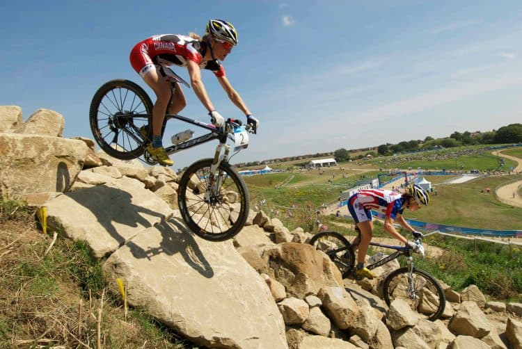
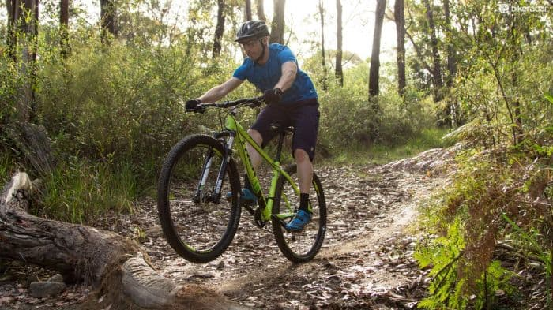
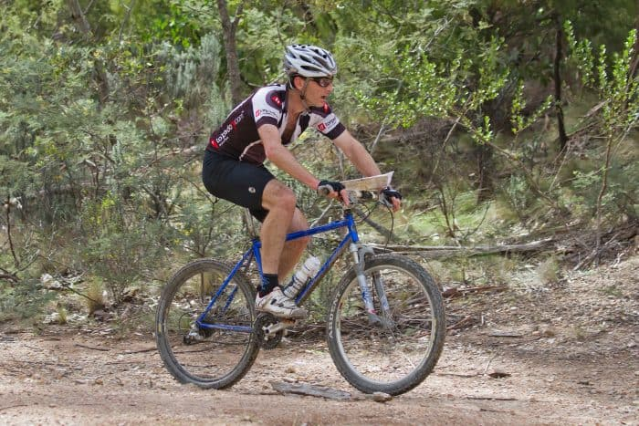
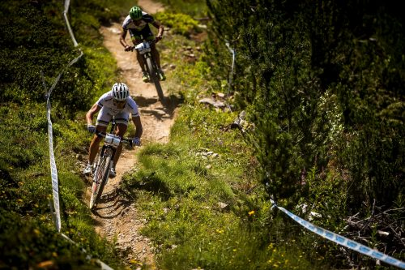
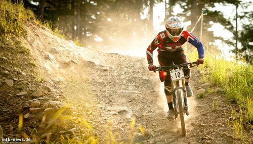

Semua tentang Sepeda Gunung[Aturan,
Sejarah,...] |
Sepeda gunung adalah olahraga yang dicirikan sebagai varian bersepeda jalan,
namun dipraktekkan di rel tanah liat, batu dan solos merugikan lainnya.
Ini telah memiliki popularitas yang berkembang karena hanya sedikit olahraga yang
pernah ada dan saat ini sudah dipraktekkan di seluruh dunia, mulai dari profesional seperti
Cross Country, atau hanya untuk tujuan rekreasi dan penemuan seperti dalam Cycling. |
Sejarah Sepeda Gunung
|
Mode ini muncul di sekitar 50 / 60, ketika sekelompok pesepeda muda mulai menjelajahi rel
dan lereng pegunungan California. Kami tidak mengatakan bahwa tidak ada yang pernah
mengendarai sepedanya dari jalan, namun pada saat ini mulai memiliki dampak yang
lebih besar, sehingga juga menimbulkan modifikasi pertama di sepeda untuk latihan olahraga ini.
Nama-nama yang menonjol dalam mode ini karena “orang tua” Mountain Bike adalah Tom
Ritchey dan Gary Fisher, yang merupakan orang pertama yang memulai sepeda untuk Mountain Bike.
Pada awalnya mereka mulai menggunakan frame cruiser (sering terlihat di Schwinn)
dan mengupgrade remnya, juga menggunakan ban yang lebih tebal.
Saat ini keduanya memiliki merek sepeda jenis ini sendiri, sehingga menjadi referensi di
lingkungan ini. |
|  |
Olympic Mountain Bike |
Dengan pesatnya pertumbuhan popularitas olahraga ini, segera menjadi modalitas
Olimpiade, lebih khusus lagi varian Cross Country. Varian ini memiliki aturan dan
aturan tersendiri yang tidak selalu berlaku untuk acara lain di luar Olimpiade,
seperti pada olahraga lainnya.
Di 1996, di Olimpiade Atlanta adalah saat berlatih untuk pertama kalinya Cross Country di
Olimpiade.
Baru-baru ini, di 2008 di Olimpiade Beijing, varian lain dari Mountain Bike, BMX, juga telah
ditambahkan. |
|  |
Perbedaan utama antara Road Cycling dan
Mountain Bike |
Perbedaan terbesar yang kita semua perhatikan adalah jenis tanah. Di jalan bersepeda,
seluruh rute dilakukan di jalan, dan sebagian besar adalah aspal. Di Sepeda Montain, Anda
juga bisa naik di jalan atau aspal, tapi akan selalu sangat sedikit. Jalan kotoran, lumpur,
turun, memanjat, ranting, batu, … adalah hal yang menjadi ciri olahraga ini.
Perbedaan lainnya adalah jumlah proteksi. Seperti pada Montain Bike, banyak variannya adalah
untuk turun dan / atau memanjat jejak tanah dengan segala macam rintangan, diperlukan perlindungan
yang lebih besar untuk menghindari cedera dan cedera jika terjadi kejatuhan, dan ini jauh lebih
mungkin daripada bersepeda jalan.
Sepeda motor juga mengubah banyak jalan (yang Mountain Bike sangat bervariasi antara varian) memiliki
struktur yang lebih diperkuat, suspensi belakang atau lengkap untuk penggerak yang lebih mudah, rem
yang lebih efektif, antara lain ...
Akhirnya, saat Montain Bike dibuat di atas rel, tidak ada cara untuk mendapatkan dukungan cepat dari
siapapun jika terjadi kerusakan, jadi pesepeda ini biasanya memiliki pengetahuan yang masuk akal tentang
motor mereka dan bagaimana menyelesaikan semuanya tepat pada waktunya sehingga mereka dapat melanjutkannya.
tes lebih cepat |
|  |
Varian sepeda gunung |
Ada sejumlah besar varian olahraga ini, beberapa di antaranya bahkan mengatur dan
mengatur tes untuk mereka. Mari kita sebutkan dan jelaskan varian yang paling umum dan
populer: |
Lintas Negara |
Inilah varian sepeda gunung tertua, yang merupakan salah satu yang berasal dari semua
gerakan ini. Seperti yang telah kami sebutkan, aturan mereka bervariasi dari uji coba,
dengan Olimpiade bahkan memiliki peraturan mereka sendiri.
Biasanya dilakukan dalam jalur tertutup, di mana semua pengendara sepeda berangkat pada
waktu yang sama dan rute terdiri dari ascents, descents, bagian lebih teknis, dan lain-lain
sehingga menguji atlet dan menunjukkan seberapa lengkap dia.
Orang yang mencapai tujuan pertama menang. |
|  |
Lereng |
Seperti namanya, fitur utamanya adalah membuat bukit menurun dengan lompatan, sudut yang
ketat dan segala jenis rintangan. Para pesepeda pergi secara terpisah dan orang yang menyelesaikan
kursus akan menang dalam waktu sesingkat-singkatnya.
Varian ini sangat berbahaya karena tingginya kecepatan keturunan dan oleh karena itu juga
menggunakan lebih banyak perlindungan seperti helm Full-face, bantalan lutut dan bahkan semacam
rompi yang melindungi dada.
Hal ini tidak dipraktikkan sebagai varian lain meski cukup populer terutama karena tingginya biaya
untuk ikut serta dengan sepeda motor turun yang cukup mahal dan kemudian dibutuhkan banyak unsur
perlindungan juga. |
|  |